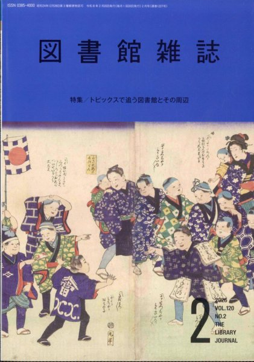

ABOUT
ビブリオ劇場とは
本のある場所が、舞台になる。
図書館や書店、カフェ。
本のある場所だからこそ生まれる物語があります。
ビブリオ劇場では、図書館が舞台の作品を図書館で、本が題材の作品を本のある場所で上演します。
物語の世界と現実の場所が重なり合うことで、その場所でしか味わえない演劇体験が生まれます。
ビブリオ劇場は、本と人、人と物語、人と人をつなぐ、新しい文化活動です。
ビブリオ劇場は、演劇を通して、本のある場所とYA（ヤングアダルト）をつなぐことを目指しています。
NEWS
ビブリオ劇場 News


- 2026年7月23日 国立国会図書館「カレントアウェアネス-E」にビブリオ劇場の記事が掲載されました。
- 2026年2月 日本図書館協会『図書館雑誌』に「図書館が劇場に！」が掲載されました。
MEDIA
日本図書館協会『図書館雑誌』で紹介されました

『図書館雑誌』2026年2月号
日本図書館協会発行『図書館雑誌』2026年2月号の特集 「トピックスで追う図書館とその周辺」において、
「図書館が劇場に！」
と題し、ビブリオスキットを含む「ビブリオ劇場」の取組について、 サイトウトシオが執筆しました。
図書館を舞台にした演劇の可能性や、演劇を通して本のある場所と YA（ヤングアダルト）をつなぐ実践について紹介しています。
掲載ページ：P.70〜72（PDFでは21〜23ページ）
ビブリオ劇場が生まれた経緯や、その理念について詳しく紹介しています。
国立国会図書館「カレントアウェアネス-E」に掲載されました
「カレントアウェアネス-E」No.527
2026年7月23日、国立国会図書館の「カレントアウェアネス-E」に、サイトウトシオ執筆の記事が掲載されました。
「YA世代と図書館を繋ぐ：ゲキ部が演じる『ビブリオ劇場』」
ビブリオ劇場が生まれた経緯から、図書館・書店など本のある場所での実践、新たな取組「絵本ドラマリーディング」、久喜市立中央図書館で行っている「図書館部活」までを紹介しています。
演劇部と図書館がつながることで、YA（ヤングアダルト）世代と本のある場所を結び、本と人、人と人が出会う場をつくっていくビブリオ劇場の現在と今後の展望をまとめた記事です。
「ビブリオ劇場」とは何か、なぜこの活動を始めたのかを、これまでの実践とともに詳しく紹介しています。
ACTIVITIES & WORKS
活動・作品
ビブリオ劇場の創作方法、上演作品、絵本を使った表現を、それぞれのページで詳しく紹介します。
REPERTOIRE
レパートリー
ビブリオ劇場の作品は、初演で終わるのではなく、図書館・書店・地域の場で再演されながら育っていきます。ここでは、現在上演中の作品も、これまでに上演してきた作品も「レパートリー」として紹介します。絵本ドラマリーディングは、下の独立したセクションで紹介します。
REPERTOIRE
怪談の多い図書館
図書館に棲む妖怪たちが登場する怪談劇。現在の中心作品です。
REPERTOIRE
COLORS
色とりどりの未来を描く、演劇とマジックによる平和の物語。
REPERTOIRE
アトム
物語を演劇として立ち上げる、ビブリオ劇場の新しいレパートリー作品。
REPERTOIRE
カンパネラ
ピアノと演劇が響き合う、平和への願いを込めた物語。
REPERTOIRE
ラビリンス
図書館全体を舞台にした、本の迷宮をめぐるビブリオ劇場の原点となる作品。
PICTURE BOOK DRAMA READING
絵本ドラマリーディング
ビブリオ劇場のもう一つの柱
絵本が、舞台になる。
絵本ドラマリーディングは、一冊の絵本を、声と身体を使って表現する取組です。基本的に絵は読み聞かせと同様に紹介し、基本的に脚色はしません。
- 図書館や書店など、本のある場所で上演しやすい形式です。
- 観客との距離が近く、絵本の世界を身近に感じられます。
- 上演後に、その絵本を手に取ってもらうきっかけをつくります。
BOOKSHELF
上演した絵本たち
『どしゃぶり』『がいとうのひっこし』『ともだちや』『ひとのなみだ』など、これまで上演した9冊を本棚風に紹介します。
DESIGN
本を手に取るように
表紙を使えるものは公式条件に従って掲載し、確認中のものは本棚デザインで統一します。
PROFILE
プロフィール
サイトウトシオ
ドラマクリエーター＆劇作家。2021年度まで久喜市立太東中学校教師として勤務し、2022年度から久喜市の部活動指導員として同校ゲキ部で演劇指導を担当。現在「ビブリオ劇場」と名づけた、本のあるところで本に関する劇を上演する取組を推進しています。
久喜市立太東中学校ゲキ部
全国大会・関東大会での上演経験を経た後、現在は「競争より共創」「バトルよりシャトル」を合言葉に、図書館や書店など本のある場所で、本に関する劇を上演する取組「ビブリオ劇場」を推進しています。
RELATED SITE
ビブリオ劇場の原点
脚本・上演記録サイト
七つ森｜中学生と創るドラマ
ビブリオ劇場の作品と活動は、中学生とともに創ってきた脚本と上演の蓄積から生まれました。サイトウトシオの脚本、作品集、全国の上演校・上演団体の記録を「七つ森」で紹介しています。
脚本・上演記録サイト「七つ森」へ →CONTACT
ご相談・ご依頼
本のある場所が、舞台になる。
一緒に、ビブリオ劇場に取り組んでみませんか。
ビブリオ劇場の上演、講演・講師、ワークショップなどについて、ご相談をお受けしています。
図書館書店公共施設
講演・講師
ビブリオ劇場について講演・研修を行います。
ワークショップ
ビブリオ劇場の制作や絵本ドラマリーディングなどのワークショップを行います。
ゲキ部による上演
久喜市立太東中学校ゲキ部による上演や交流企画・共同企画についてご相談いただけます。
取材
取材などご相談ください。
INQUIRY FORM
お問い合わせフォーム
必要事項をご入力ください。送信ボタンを押すと、宛先を設定した新規メール画面が開きます。